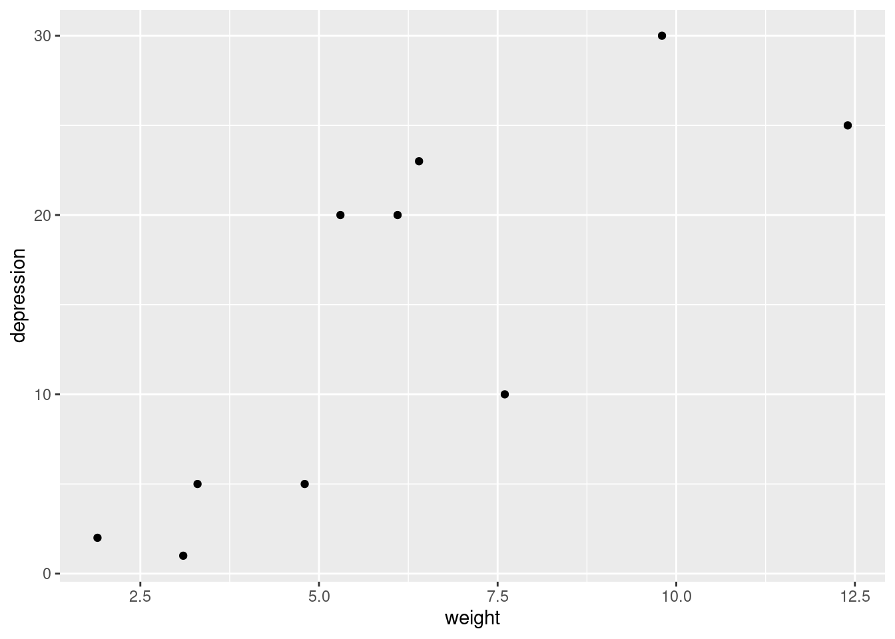
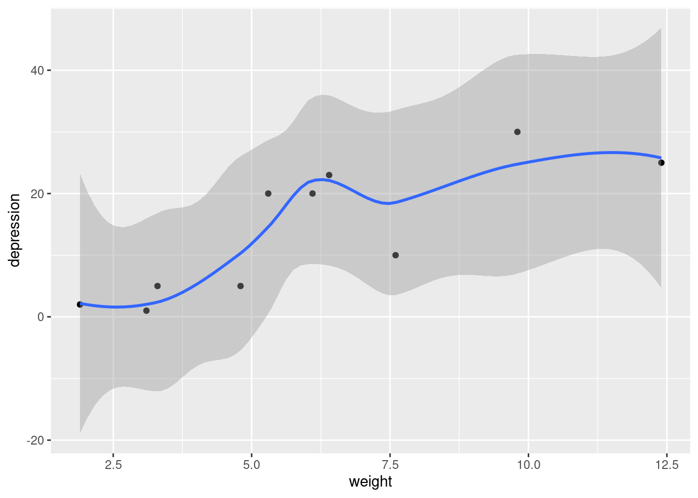
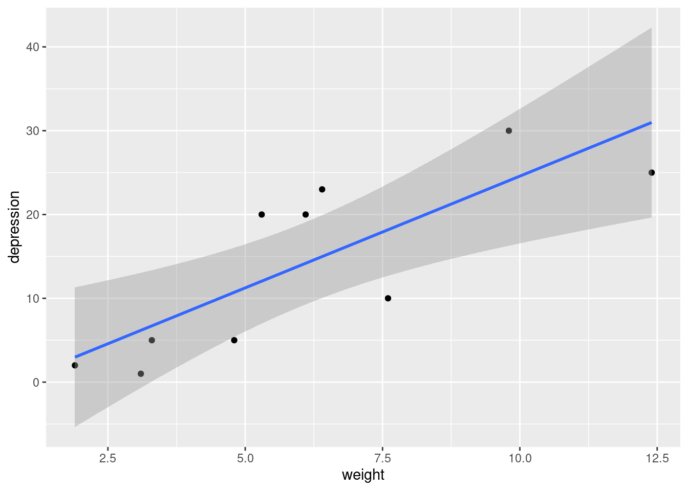

── Conflicts ────────────────────────────────────────── tidyverse_conflicts() ──
✖ dplyr::filter() masks stats::filter()
✖ dplyr::lag() masks stats::lag()
ℹ Use the conflicted package (<http://conflicted.r-lib.org/>) to force all conflicts to become errors
Rows: 10 Columns: 2
── Column specification ────────────────────────────────────────────────────────
Delimiter: ","
dbl (2): weight, depression
ℹ Use `spec()` to retrieve the full column specification for this data.
ℹ Specify the column types or set `show_col_types = FALSE` to quiet this message.
Two quantitative variables, so a scatterplot. The weight of the roller is explanatory (input), and the depression caused by the roller is the response (output), so:
ggplot(roller, aes(x = weight, y = depression)) +geom_point()

ggplot(roller, aes(x = weight, y = depression)) +geom_point() +geom_smooth()
`geom_smooth()` using method = 'loess' and formula = 'y ~ x'

The trend of the points is more or less linear (or, at least, not obviously curved.
The major purpose of making a scatterplot at this point is to see whether we have a relationship, and if so, what kind of relationship it is.
ggplot(roller, aes(x = weight, y = depression)) +geom_point() +geom_smooth(method ="lm")
`geom_smooth()` using formula = 'y ~ x'

roller.1<-lm(depression ~ weight, data = roller)summary(roller.1)
Call:
lm(formula = depression ~ weight, data = roller)
Residuals:
Min 1Q Median 3Q Max
-8.180 -5.580 -1.346 5.920 8.020
Coefficients:
Estimate Std. Error t value Pr(>|t|)
(Intercept) -2.0871 4.7543 -0.439 0.67227
weight 2.6667 0.7002 3.808 0.00518 **
---
Signif. codes: 0 '***' 0.001 '**' 0.01 '*' 0.05 '.' 0.1 ' ' 1
Residual standard error: 6.735 on 8 degrees of freedom
Multiple R-squared: 0.6445, Adjusted R-squared: 0.6001
F-statistic: 14.5 on 1 and 8 DF, p-value: 0.005175
There is a moderately high R-squared (suggesting a real relationship with weight, but one with a certain amount of scatter). This is supported by the small P-value (0.005) for weight , and the slope of 2.67 is positive, indicating an upward trend.
new <-datagrid(model = roller.1, weight =seq(2.5, 12.5, 2.5))new
The intervals are quite wide because of the small sample size of 10
Note that predict only produces the predictions and intervals themselves, not what they are predictions for, so the usual process is to save the predictions and then put them side by side with the values they are predictions for, which are in new .
p <-predict(roller.1, new, interval ="p")cbind(new, p)
The confidence intervals are narrower in the middle, because there are more “nearby” points to base a prediction on. The predictions form a line and the envelope around the line is the confidence interval for a prediction at each weight.
In question 4, the confidence interval went from 17.75 to 31.4. On the graph, the interval should correspond to the bottom and top of the envelope at that value of weight . For a weight of 10, the bottom of the envelope is just over halfway from 15 to 20 (that is, just over 17.5), and the top of the envelope is less than halfway from 30 to 35 (so, less than 32.5). These are consistent with the values from question 4.
Rows: 16 Columns: 3
── Column specification ────────────────────────────────────────────────────────
Delimiter: ","
chr (1): dilution
dbl (2): n, y
ℹ Use `spec()` to retrieve the full column specification for this data.
ℹ Specify the column types or set `show_col_types = FALSE` to quiet this message.
The observations in this case are seeds (each one either germinates or not, which is the actual response), and there is more than one seed per row, specifically the number in the column n . (If there had only been one seed per row, there would have been a column with a name like germinated and values “yes” and “no”, or “true” and “false”).
In this dataset we have “grouped” observations (more than one per row), so we need a two-column response, the number of successfully germinated seeds in the first column (which is y ), and the number of seeds that failed to germinate in the second.
oro.1<-glm(cbind(y, n - y) ~ dilution, family ="binomial", data = oro)summary(oro.1)
Call:
glm(formula = cbind(y, n - y) ~ dilution, family = "binomial",
data = oro)
Coefficients:
Estimate Std. Error z value Pr(>|z|)
(Intercept) -1.8015 0.1851 -9.732 <2e-16 ***
dilution1/25 3.7225 0.2717 13.703 <2e-16 ***
dilution1/625 3.4771 0.2559 13.585 <2e-16 ***
---
Signif. codes: 0 '***' 0.001 '**' 0.01 '*' 0.05 '.' 0.1 ' ' 1
(Dispersion parameter for binomial family taken to be 1)
Null deviance: 387.689 on 15 degrees of freedom
Residual deviance: 22.945 on 13 degrees of freedom
AIC: 78.273
Number of Fisher Scoring iterations: 4
Having a categorical explanatory variable means that the two (very significant) tests shown in the summary output are of the level shown against the baseline 1/1 dilution, and not what we want. Hence, we need a drop1 , as in regular regression. This is a generalized linear model, so the test needs to be Chisq rather than F.
With a tiny P-value of 6.3 × 10−80 (!), there is definitely an effect of dilution overall.
Another approach is using anova (i.e. comparing two models). Compare the model with dilution against the model without. The way to this is to have a 1 on the right side of the squiggle:
oro.0<-glm(cbind(y, n - y) ~1, family ="binomial", data = oro)
anova(oro.0, oro.1, test ="Chisq")
Analysis of Deviance Table
Model 1: cbind(y, n - y) ~ 1
Model 2: cbind(y, n - y) ~ dilution
Resid. Df Resid. Dev Df Deviance Pr(>Chi)
1 15 387.69
2 13 22.94 2 364.74 < 2.2e-16 ***
---
Signif. codes: 0 '***' 0.001 '**' 0.01 '*' 0.05 '.' 0.1 ' ' 1
Based on the output here vs. the drop1 , it is evident that the test and P-value are exactly the same.
oro %>%count(dilution) -> newnew
# A tibble: 3 × 2
dilution n
<chr> <int>
1 1/1 6
2 1/25 5
3 1/625 5
In question 10, we found there was a (very) significant effect of dilution . The predictions here suggest that this is because the 1/1 dilution is very different from the other two (less germination), which are very similar in terms of germination to each other.
There are two reasons why the 1/25 and 1/625 dilutions are similar in terms of germination: first, their Estimates are very close, but second and more insightfully, their confidence intervals overlap, so from that point of view, they are not significantly different in terms of germination.